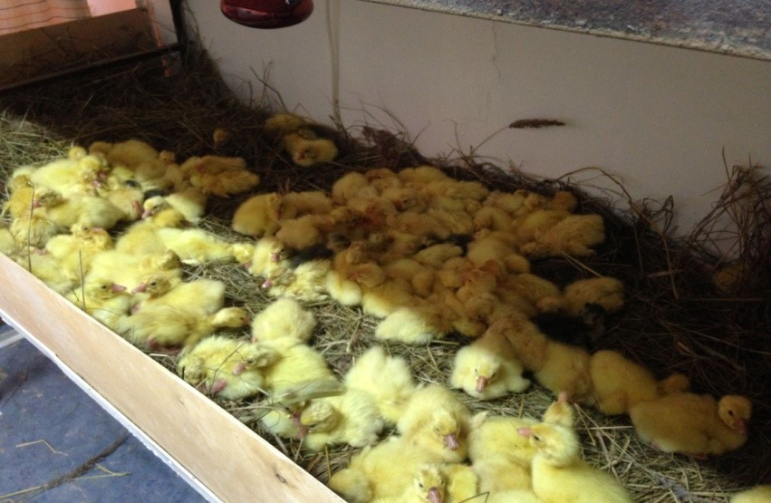
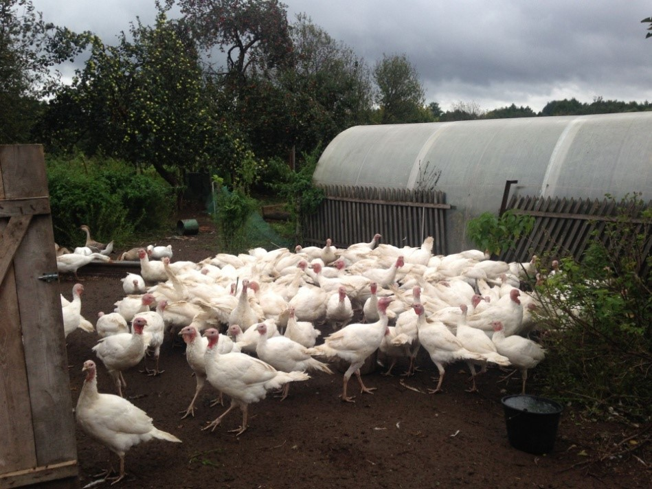
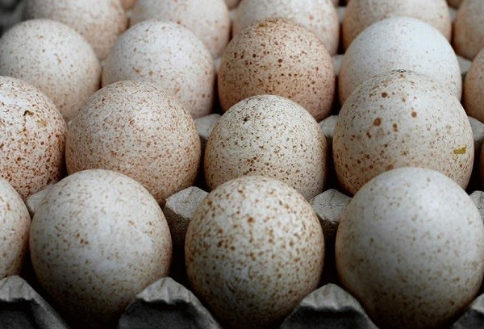

Рамешки
Экономика
Трикотажная фабрика «Весна»

Производство трикотажа (шерсть, лен, вискоза, хлопок); джемпера, свитера, водолазки, футболки, носки, рейтузы, шапки, шарфы, перчатки, варежки. Технические перчатки. Имиджевая и корпоративная одежда из тканей и трикотажа.
Хозяйство "Былие травное" (гусиная экоферма полного цикла)-деревня Иевлево



Хозяйство "Былие травное" (Сидорова Лилия Владиславовна) занимается разведением сельскохозяйственной птицы: гуси, утки, индейка, куры. Основное направление - гуси. Основная задача обеспечение молодняком и инкубационным яйцом личные подсобные хозяйства соседних областей: тверской, московской, нижегородской, ленинградской, ярославской, псковской, ивановской, владимирской. Также ферма предлагает охлажденные тушки гусей, гусиный жир, пух Очень важно, что гуси из поколения в поколение выводятся только от своего маточного поголовья. Здоровые родители, дают здоровых детей, а это, в свою очередь, залог исключительного качества мяса, при высоком, сохранном выводе.